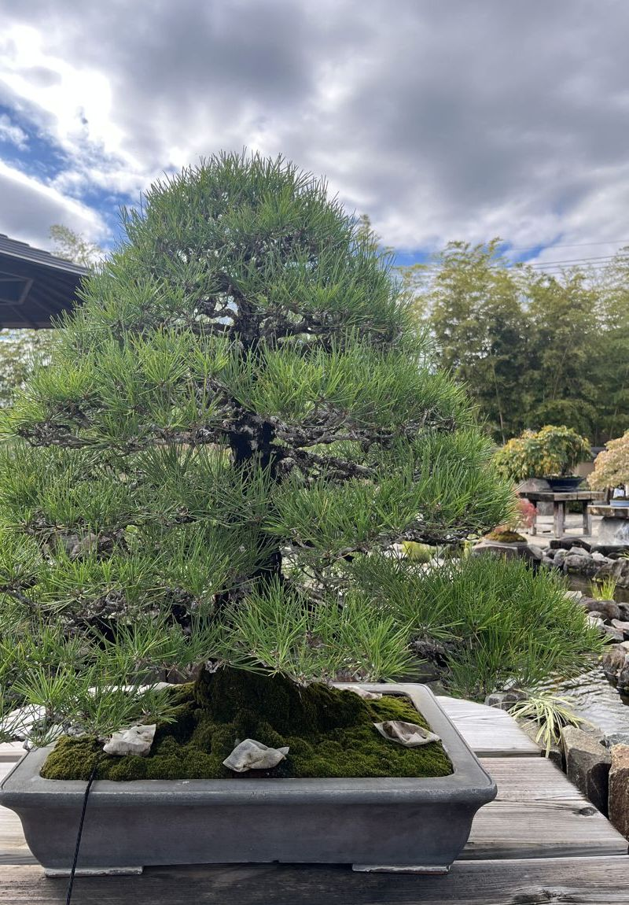

一鉢のページOne treeUn árbol一盆详情
黒松KUROMATSUKUROMATSU黑松
KUROMATSU黒松黒松KUROMATSU

黒松の模様木。腰で曲がり、上へ伸びる一鉢。 A black pine in the informal upright style: it bends at the waist, then rises. Un pino negro moyogi: se curva en la cintura y asciende. 黑松模样木：在腰部弯曲，向上伸展。
この画面は説明だけです。売り買いはしません。This page only describes the tree. Nothing is for sale here.Esta página solo describe el árbol; no se vende nada.本页仅作介绍，不进行买卖。
この木についてAbout this treeSobre este árbol关于这盆树
- 樹種SpeciesEspecie树种
- 黒松Japanese black pine (Kuromatsu)Pino negro japonés黑松
- 樹形StyleEstilo树形
- 模様木Moyogi (informal upright)Moyogi模样木
- 樹齢AgeEdad树龄
- 推定およそ60年Estimated: about 60 yearsEstimada: unos 60 años推定约60年 サンプルsamplemuestra样例
- 大きさHeightAltura高度
- 約55cmapprox. 55 cmaprox. 55 cm约55厘米 サンプルsamplemuestra样例
- 見る向きViewing sideLado de vista观赏面
- 正面Shōmen (the front)Shōmen (frente)正面
手入れの履歴Care historyHistorial de cuidados养护记录
- 植え替えRepottingTrasplante换盆
根の古い土を落とし、新しい土にOld soil removed from the roots; fresh soil addedTierra nueva换新土 - 芽摘みBud pinchingPinzado de brotes摘芽
伸びすぎた新芽を摘んで、枝の数を整えるOvergrown new buds pinched to keep the branches compactBrotes recortados控制新芽 - 針金掛けWiringAlambrado缠铁丝
枝の向きを直し、樹冠の形を整えるBranches repositioned to refine the shape of the crownRamas reorientadas调整枝向 - 剪定PruningPoda修剪
込み合った枝を抜くCrowded branches thinned outRamas aclaradas疏枝
年月と作業はサンプルです。Dates and tasks are sample data.Datos de muestra.日期与作业为样例。
見どころWhat to look forQué mirar看点
不等辺三角形The scalene triangleEl triángulo escaleno不等边三角形
葉のかたまりの3つの頂点を結ぶと、辺の長さがそろわない三角形になります。左右対称にしないことで、木に動きと奥行きが生まれます。Join the tops of the three main foliage pads and you get a triangle whose sides are all different lengths. Avoiding symmetry gives the tree movement and depth.Los tres vértices de las masas de hojas forman un triángulo desigual, que da movimiento.连接三处枝叶的顶点，得到边长各不相同的三角形，使树有动感和纵深。
幹の曲がり（腰）The bend in the trunk (the "waist")La curva del tronco («cintura»)树干的弯曲（“腰”）
根張りから立ち上がりへ、幹は一度大きく曲がります。この曲がりが、年月を重ねた木の力強さを見せます。From the root flare through the first rise, the trunk bends once, strongly. That bend shows the strength of a tree that has aged.El tronco se curva con fuerza una vez; eso muestra el paso del tiempo.从根部到起始段，树干有一次明显弯曲，显出岁月的力量。